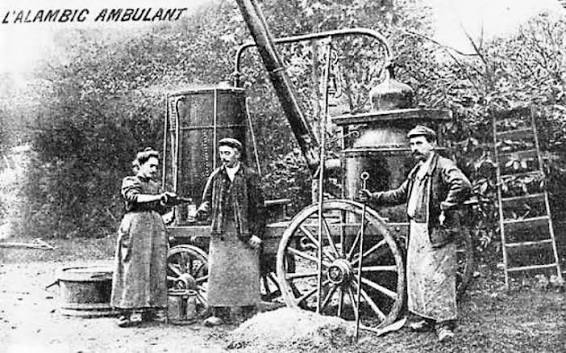

Eau de vie
de prune
du Lot


⟹ Distillation Artisanale ⟸
Dans les fermes du Lot, chaque automne a longtemps été marqué par le même rituel : la récolte des prunes locales, puis leur distillation en eau de vie, pratique paysanne transmise de génération en génération pour valoriser les fruits que l'on ne pouvait ni vendre ni conserver.

Le droit de distiller ses propres fruits, appelé « privilège des bouilleurs de cru », remonte au XIXᵉ siècle. Il autorisait chaque famille à faire distiller sa récolte par un bouilleur ambulant venu de village en village avec son alambic monté sur roues.
Ce privilège, aujourd'hui très restreint et réservé à un nombre décroissant d'ayants droit, a néanmoins laissé une empreinte durable dans les campagnes du Quercy, où plusieurs distilleries familiales perpétuent le savoir-faire de manière artisanale.
Loin de la production industrielle, l'eau de vie de prune du Lot reste aujourd'hui un produit de petite série, souvent réservé à la consommation familiale ou à la vente directe à la ferme.
Une bonne eau de vie ne se juge pas au nombre de degrés, mais à ce qu'il reste du fruit une fois le verre reposé.
— Un bouilleur de cru du QuercyServie fraîche mais non glacée, l'eau de vie de prune se déguste traditionnellement en fin de repas, en digestif, dans un petit verre tulipe qui concentre les arômes de fruit.
Contrairement à un produit industriel, l'eau de vie de prune artisanale se déniche surtout au fil des rencontres, chez les producteurs qui perpétuent encore la distillation à la ferme.
Les fermes et distilleries familiales du causse proposent souvent une vente directe, en petites quantités et en fonction des millésimes.
Les marchés de producteurs du Lot, notamment en fin d'année, permettent de rencontrer les derniers artisans distillateurs de la région.
Les épiceries fines et caves de Cahors et des villages alentour référencent parfois ces petites productions locales.